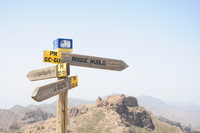

Hay que retroceder al periodo de formación de la isla para comprender la magnitud de este ciclópeo monolito rocoso. El edificio volcánico que originó este roque era un estratovolcán, denominado Roque Nublo, el cual estuvo activo entre 5 y 2,8 millones de años antes del presente (Plioceno). La roca tiene unos 65 metros de alto, y es un resto de una colada piroclástica de bloques y cenizas soldadas originada por la erupción explosiva del estratovolcán, cuya altura pudo alcanzar los 3.000 metros. Hoy día está muy desmantelado, y la erosión galopante e inexorable que ha provocado el paso de millones de años nos ha dejado una caldera de 200 kilómetros cuadrados de superficie.
| Dificultad | Media |
|---|---|
| Duración | 1h 30min |
| Material necesario | Calzado cómodo y gorra |
| Mejor época | Primavera |
La Goleta - El Fraile - Degollada del Nublo - El Tablón - Roque Nublo. Regreso por el Cortijo del Nublo y Degollada Blanca.
Después de leer la abundante información que nos proporcionan los carteles situados al inicio del camino, así como de disfrutar de los quioscos y ventorrillos que se montan en el margen de la carretera, donde se pueden comprar productos de repostería locales, comenzamos nuestro andar en una “auténtica autopista”. Es muy amplio el camino en este primer tramo y no ofrece dificultad alguna.
Además, una señal de madera, con el indicativo “PR-GC-60”, le marca la dirección del Roque Nublo. Pertenece a la señalética de sendero de “pequeño recorrido” que está colocando el Cabildo de Gran Canaria en muchos lugares de la isla.
Entre retamas, pinos, tabaibas, margaritas, cerrajas y salvias, el camino va ganando altura, a la vez que nos ofrece una amplia panorámica del pueblo de Ayacata, que podrá contemplar abajo, a su izquierda.
En 10 minutos (527 metros de recorrido) llegará a un banco de roca (similar a un muro de piedra seca) preparado para que el caminante pueda realizar una pausa. Tómeselo con tranquilidad. No hay prisa, lo importante es disfrutar del entorno. Respiraremos aire limpio, preparándonos para la subida, de notable pendiente.
Para proseguir nuestro itinerario, damos la vuelta y regresamos hasta el último cruce de caminos: degollada del Nublo. En ese punto, tomamos ahora la dirección de la derecha, según descendemos, rumbo a “La Culata”. Es una bajada resbaladiza, entre pinares jóvenes, que nos conduce hasta el siguiente cruce, flanqueado por muros de piedra. Aquí la señal de madera nos marca una dirección nueva, “El Aserrador”, a donde llegaría si tomase a la izquierda. Por ese camino podría desplazarse hasta El Juncal de Tejeda y otras muchas localidades de Tejeda.
Hasta este punto hemos recorrido unos 2,7 km, en 54’ de tiempo neto (sin contar las paradas realizadas), y estamos en la cota 1.632 m. a.
Vamos girando, nuestro rumbo de N a NE. Justo en la degollada Blanca es donde más claro se ve el cambio de dirección que el camino hace para retornar al aparcamiento. Es en este punto donde tendrá la oportunidad de salir del sendero por su izquierda, llanear a la sombra de los pinos y acercarse un poco a un espolón rocoso que cae sobre la Cruz de Timagada, aproximadamente.
Regrese al camino principal, y en pocos minutos llegará a un nuevo cruce. En él debemos tomar la dirección de la derecha, el camino que sube sobre base de piedra seca y siguiendo la señal de madera que indica “La Goleta”.
Si quisiera bajar a La Culata, le informamos que el desnivel es fuerte y para regresar tendría que hacer un gran esfuerzo. Puede descender por este y regresar por otro camino que sube justo al aparcamiento, pasando por la Casa del Pino y el barranquillo del Agua. Pero esa es otra ruta diferente a la propuesta aquí.